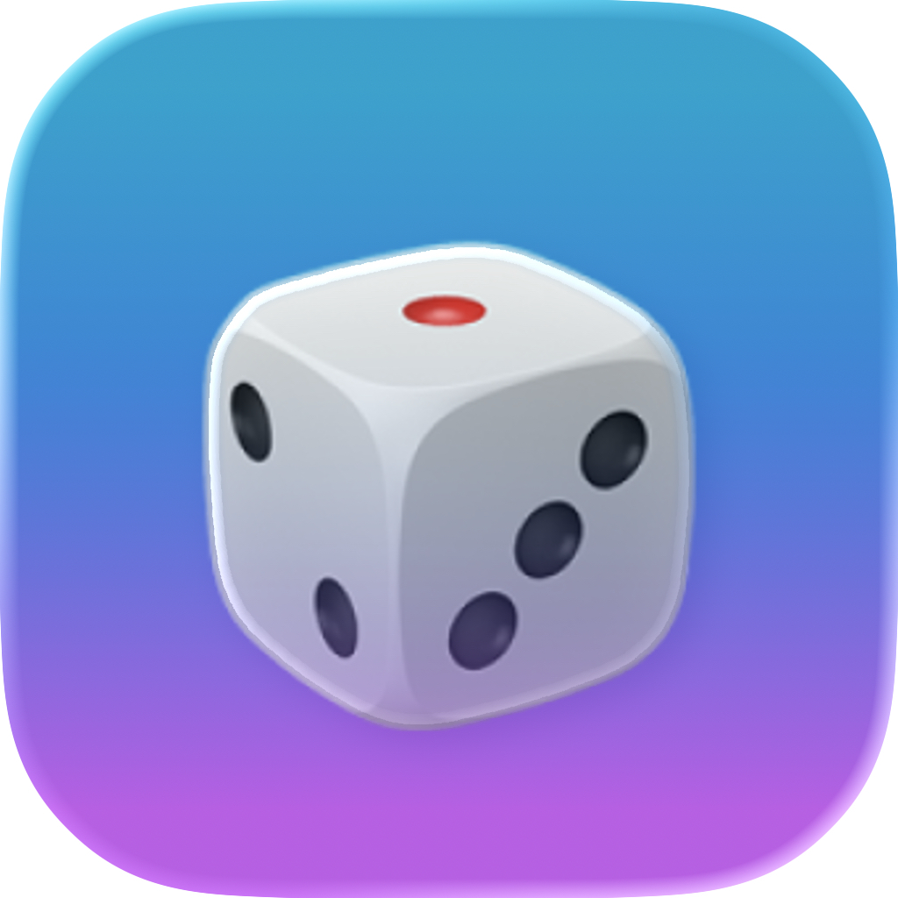

Contact
For app support, include your device model, iOS version, and a short description of the issue.
Email supportCurrent support email: pcesnek290@gmail.com

SidequestSupport
Need help with the app, subscriptions, quest history, badges, or something that feels off? Start here.
For app support, include your device model, iOS version, and a short description of the issue.
Email supportCurrent support email: pcesnek290@gmail.com
If premium access is missing after reinstalling or changing devices, open Sidequest settings and use Restore Purchases.
Quest notes and photos are stored on your device. If you delete the app, local data may be removed by iOS.
Use judgement, follow local laws, and skip any quest that feels unsafe, illegal, or inappropriate for your situation.
Yes. In settings, you can disable categories or add blocked keywords.
Sidequest is localized in English, Czech, and Slovak.
Yes. The widget can show your current active quest at a glance.